Lecture 2: Review of Probability
Zheng Tian
Created: 2017-02-23 Thu 09:36
1 Random Variables and Probability Distributions
Defining probabilities and random variables
- Experiments and outcomes B_frame
- An experiment is the processes that generate random results
- The outcomes of an experiment are its mutually exclusive potential results.
- Example: tossing a coin. The outcome is either getting a head(H) or a tail(T) but not both.
- Sample space and events B_frame
- A sample space consists of all the outcomes from an experiment,
denoted with the set 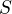.
- 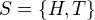 in the tossing-coin experiment.
- An event is a subset of the sample space.
- Getting a head is an event, which is 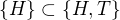.
- A sample space consists of all the outcomes from an experiment,
denoted with the set 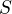.
Probability
- An intuitive definition of probability B_frame
- The probability of an event is the proportion of the time that the event will occur in the long run.
- For example, we toss a coin for 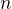 times and get 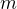 heads. When is very large, we can say that the probability of getting a head in a toss is 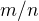.
- An axiomatic definition of probability B_frame
- A probability of an event 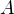 in the sample space , denoted as
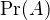, is a function that assign a real number in 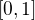, satisfying the following three conditions:
- 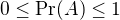.
- 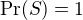.
- For any disjoint sets, and 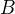, that is and have no element in common, 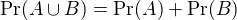.
- A probability of an event 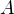 in the sample space , denoted as
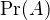, is a function that assign a real number in 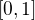, satisfying the following three conditions:
Random variables
- The definition of random variables B_frame
- A random variable is a numerical summary associated with the outcomes of an experiment.
- You can also think of a random variable as a function mapping from an event 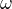 in the sample space 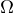 to the real line.
- An illustration of random variables B_frame

Figure 1: An illustration of random variable
- Discrete and continuous random variables B_frame
Random variables can take different types of values
- A discrete random variables takes on a discrete set of values, like 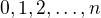
- A continuous random variable takes on a continuum of possble values, like any value in the interval 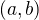.
Probability distributions
- The probability distribution for a discrete random variable B_frame
- The probability distribution of a discrete random variable is the list of all possible values of the variable and the probability that each value will occur. These probabilities sum to 1.
The probability mass function. Let 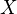 be a discrete random variable. The probability distribution of (or the probability mass function), 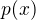, is
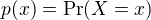
- The axioms of probability require that

- 2)
 .
.
- An example of the probability distribution of a discrete random variable B_frame
Table 1: An illustration of the probability distribution of a discrete random variable 1 2 3 Sum 
0.25 0.50 0.25 1.
The cumulative probability distribution
- Definition of the c.d.f. B_frame
The cumulative probability distribution (or the cumulative distribution function, c.d.f.):
Let
 be the c.d.f of . Then
be the c.d.f of . Then  .
.
Table 2: An illustration of the c.d.f. of a discrete random variable 1 2 3 Sum 0.25 0.50 0.25 1 C.d.f. 0.25 0.75 1 -- - An illustration of the c.d.f. of a discrete random variable B_frame

Figure 2: The c.d.f. of a discrete random variable
Bernouli distribution
The Bernoulli distribution

The probability distribution of a continuous random variable
- Definition of the c.d.f. and the p.d.f. B_frame
- The cumulative distribution function of a continous random variable
is defined as it is for a discrete random variable.

- The probability density function (p.d.f.) of is the function
that satisfies

- The cumulative distribution function of a continous random variable
is defined as it is for a discrete random variable.
- Properties of the c.d.f. B_frame
- For both discrete and continuous random variable,
 must satisfy
the following properties:
must satisfy
the following properties:
 ( is bounded between 0 and 1)
( is bounded between 0 and 1) ( is nondecreasing)
( is nondecreasing)
- By the definition of the c.d.f., we can conveniently calculate
probabilities, such as,

 .
.
- For both discrete and continuous random variable,
- The c.d.f. and p.d.f. of a normal distribution B_frame

Figure 3: The p.d.f. and c.d.f. of a continuous random variable (the normal distribution)
2 Expectation, Variance, and Other Moments
The expected value of a random variable
- The expected value B_frame
- The expected value of a random variable, X, denoted as
 , is
the long-run average of the random variable over many repeated
trials or occurrences, which is also called the expectation or the
mean.
, is
the long-run average of the random variable over many repeated
trials or occurrences, which is also called the expectation or the
mean. - The expected value measures the centrality of a random variable.
- The expected value of a random variable, X, denoted as
- Mathematical definition B_frame
- For a discrete random variable

- e.g. The expectation of a Bernoulli random variable,
 ,
,

- For a continuous random variable

- For a discrete random variable
The variance and standard deviation
- Definition of variance and standard deviation B_frame
- The variance of a random variable measures its average deviation from its own expected value.
Let
 . Then the variance of ,
. Then the variance of ,

- The standard deviation of :

- Computing variance B_frame
- A convenient formula for calculating the variance is

- The variance of a Bernoulli random variable,

- The expectation and variance of a linear function of . Let
 , then
, then

 .
.
- A convenient formula for calculating the variance is
Moments of a random variable, skewness and kurtosis
- Definition of the moments of a distribution B_frame
- kth moment
- The kth moment of the distribution of is
 . So, the expectation is the "first"
moment of .
. So, the expectation is the "first"
moment of . - kth central moment
- The kth central moment of the distribution
of with its mean
 is
is  . So, the
variance is the second central moment of .
. So, the
variance is the second central moment of .
- Skewness B_frame
The skewness of a distribution provides a mathematical way to describe how much a distribution deviates from symmetry.

- A symmetric distribution has a skewness of zero.
- The skewness can be either positive or negative.
- That
 is divided by
is divided by  is to make
the skewness measure unit free.
is to make
the skewness measure unit free.
- Kurtosis B_frame
The kurtosis of the distribution of a random variable measures how much of the variance of arises from extreme values, which makes the distribution have "heavy" tails.

- The kurtosis must be positive.
- The kurtosis of the normal distribution is 3. So a distribution that has its kurtosis exceeding 3 is called heavy-tailed.
- The kurtosis is also unit free.
- An illustration of skewness and kurtosis B_frame

- All four distributions have a mean of zero and a variance of one, while (a) and (b) are symmetric and (b)-(d) are heavy-tailed.
3 Two Random Variables
The joint and marginal distributions
- The joint probability function of two discrete random variables
- The joint distribution of two random variables and
 is
is

 must satisfy
must satisfy

 for all possible
combinations of values of and .
for all possible
combinations of values of and .
- The joint distribution of two random variables and
- The joint probability function of two continuous random variables
- For two continuous random variables, and , the counterpart of is
the joint probability density function,
 , such that
, such that
- For two continuous random variables, and


The marginal probability distribution
- The marginal probability distribution of a random variable is simply the probability distribution of its own.
- For a discrete random variable, we can compute the marginal
distribution of as

- For a continuous random variable, the marginal distribution is

An example of joint and marginal distributions
Rain ( ) ) |
No rain ( ) ) |
Total | |
|---|---|---|---|
Long commute ( ) ) |
0.15 | 0.07 | 0.22 |
Short commute ( ) ) |
0.15 | 0.63 | 0.78 |
| Total | 0.30 | 0.70 | 1 |
Conditional probability
For any two events and , the conditional probability of given is defined as


The conditional probability distribution
- The conditional distribution of a random variable given another
random variable is
 .
. - The formula to compute it is

- For continuous random variables and , we define the conditional
density function as

The conditional expectation
- The conditional expectation of given is the expected value
of the conditional distribution of given .
For discrete random variables, the conditional mean of
given  is
is

For continuous random variables, it is computed as

- The expected mean of commuting time given it is raining is
 .
.
The law of iterated expectation
The law of iterated expectation:

- It says that the mean of is the weighted average of the
conditional expectation of given , weighted by the
probability distribution of . That is,

- If
 , then
, then  .
.
Conditional variance
- With the conditional mean of given , we can compute the
conditional variance as

- From the law of iterated expectation, we can get the following

Independent random variables
- Two random variables and are independently distributed, or
independent, if knowing the value of one of the variable provides no
information about the other.
- Mathematically, it means that

- If and are independent

Independence between two continuous random variable
- For two continuous random variables, and , they are
independent if

- It follows that if and are independent

Covariance and Correlation
- Covariance B_frame
The covariance of two discrete random variables and
is

- For continous random variables, the covariance of and is

- The covariance can also be computed as

- Correlation coefficient B_frame
The correlation coefficient of and
is

 .
. (or
(or  ) means that
and are uncorrelated.
) means that
and are uncorrelated.- Since
 , when and are uncorrelated, then
, when and are uncorrelated, then  .
.
Independence and uncorrelation
If and
are independent, then

- That is, if and are independent, they must be
uncorrelated.
- However, the converse is not true. If and are
uncorrelated, there is a possibility that they are actually
dependent.
Conditional mean and correlation
- If and are independent, then we must have

Then, we can prove that
 and .
and .

It follows that
 and .
and .
Some useful operations
The following properties
of  ,
,  and
and
 are useful in calculation,
are useful in calculation,

4 Four Specific Distributions
The normal distribution

 and
and  , and we write
, and we write 
 and
and  . The p.d.f of the
standard normal distribution is
. The p.d.f of the
standard normal distribution is

 .
.Symmetric and skinny tails
- The normal distribution is symmetric around its mean,
 , with the
skewness equal 0
, with the
skewness equal 0 - It has 95% of its probability between
 and
and  , with the kurtosis
equal 3.
, with the kurtosis
equal 3.

Figure 6: The normal probability density
Transforming a normally distributed random variable to the standard normal distribution
- Let be a random variable with a normal distribution, i.e.,
 .
. - We compute
 , which follows
the standard normal distribution,
, which follows
the standard normal distribution,  .
. - For example, if
 , then
, then  . When we want to find
. When we want to find  , we only need to
compute
, we only need to
compute 
Generally, for any two number
 and let
and let  and
and
 , we have
, we have

The multivariate normal distribution
- The multivariate normal distribution is the joint distribution of a set of random variables.
- The p.d.f. of the multivariate normal distribution is beyond the scope of this course, but the following properties make this distribution handy in analysis.
Important properties of the multivariate normal distribution
- If n random variables,
 , have a multivariate
normal distribution, then any linear combination of these variables
is normally distributed. For any real numbers,
, have a multivariate
normal distribution, then any linear combination of these variables
is normally distributed. For any real numbers,  , a linear combination of
, a linear combination of  is
is  .
. - If a set of random variables has a multivariate normal distribution, then the marginal distribution of each of the variables is normal.
- If random variables with a multivariate normal distribution have covariances that equal zero, then these random variables are independent.
- If and have a bivariate normal distribution, then
 , where
, where  and
and  are constants.
are constants.
The chi-squared distribution
- Let
 be n indepenent standard normal distribution,
i.e.
be n indepenent standard normal distribution,
i.e.  for all
for all  . Then, the random
variable
. Then, the random
variable
 has a chi-squared distribution with degrees of freedom, denoted as
has a chi-squared distribution with degrees of freedom, denoted as
 , with
, with  and
and 
- If
 , then
, then  with
with  and
and  .
.
The student t distribution
- Let ,
 , and
, and  and
and  be
independently distributed. Then, the random variable
be
independently distributed. Then, the random variable
 has a student t distribution with degrees of freedom, denoted as
has a student t distribution with degrees of freedom, denoted as
 .
. - As increases,
 gets close to a standard normal distribution.
gets close to a standard normal distribution.
The F distribution
- Let
 ,
,  , and
, and  and
and
 are independent. Then, the random variable
are independent. Then, the random variable
 has an F distribution with
has an F distribution with  degrees of freedom, denoted as
degrees of freedom, denoted as

- If
 , then
, then 
- As
 , the
, the  distribution is the
same as the
distribution is the
same as the  distribution divided by
distribution divided by  .
.